Bernard Walter Standing 1925 - 1970
[ Home ] | [ Calendar ] | [ Surnames Index ] | [ Errors ] | [ Family History ]A typewriter mechanic and workshop manager and the child of William Standing (a laundry man) and Eliza Parr, Bernard Standing, the fourth cousin once-removed on the father's side of Nigel Horne, was born in Ilford, London, England on 7 Sept 19251,2,3,4 and. He married Rose Jackson (a shorthand typist with whom he had 1 surviving child, ) in Ilford on 4 Jun 19496.
During his life, he was living at his birthplace in 1949 (the same place as his father had been living on 29 Sept 1939) and at 71 Berkeley Avenue in Ilford in 19647 and in 1970.
He died on 21 Oct 1970 at King George Hospital in Ilford2,4,5 (cardiac infraction and coronary thrombosis) and was buried at Barkingside Garden of Rest Cemetery, Barkingside, London, England after 21 Oct 1970.
Parents
- William Ernest was born on 12 Aug 1878
- Eliza Mary was born on 19 May 1885
Citations
- England & Wales births 1837-2006 - Findmypast
- England & Wales deaths 1837-2007 - Findmypast
- England & Wales, Birth Index: 1916-2005 Online publication - Provo, UT, USA: The Generations Network, Inc., 2008.Original data - General Register Office. England and Wales Civil Registration Indexes. London, England: General Register Office. © Crown copyright. Published by permission of the Cont
- England & Wales, Death Index: 1984-2005 Online publication - Provo, UT, USA: The Generations Network, Inc., 2007.Original data - General Register Office. England and Wales Civil Registration Indexes. London, England: General Register Office. © Crown copyright. Published by permission of the Cont
- England & Wales Government Probate Death Index 1960-2019 - Findmypast
- England & Wales Marriages 1837-2005 - Findmypast
- London, England, Electoral Registers, 1832-1965 Ancestry.com Operations, Inc.
Media
Bernard Standing
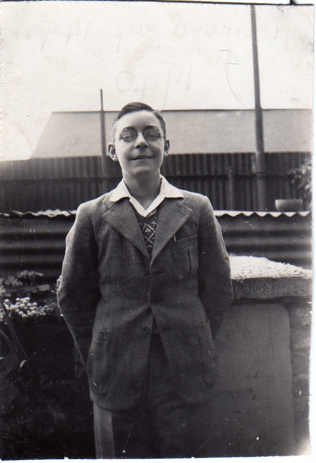
Bernard Standing - 2
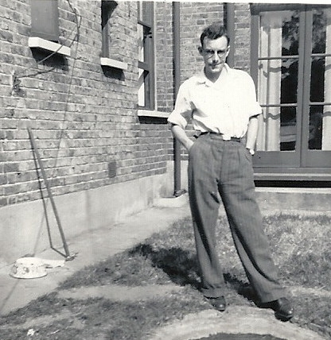
Bernard Standing - 3
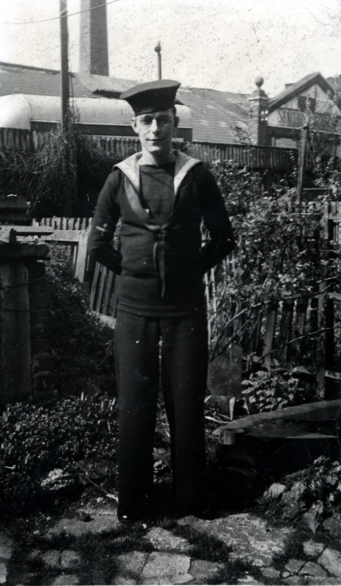
Bernard Standing - Rose Jackson - marriage certifi
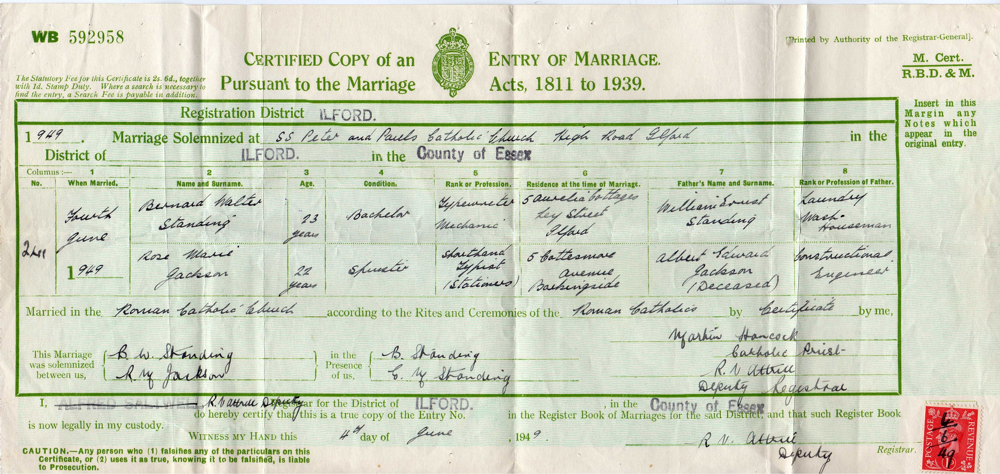
Bernard Standing - death certificate

Bernard Standing - birth certificate
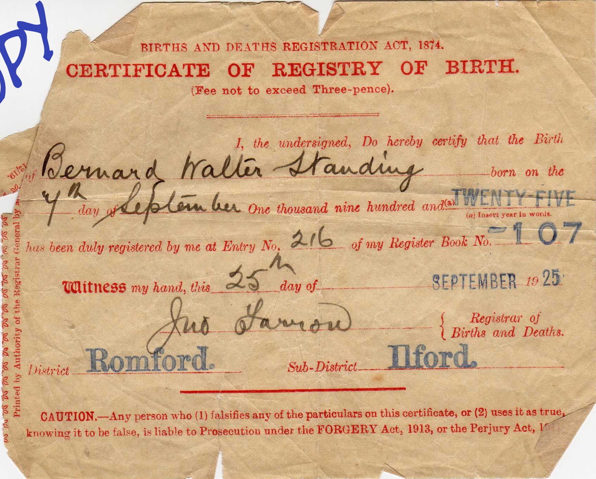
Bernard Standing - Grave Registration Details
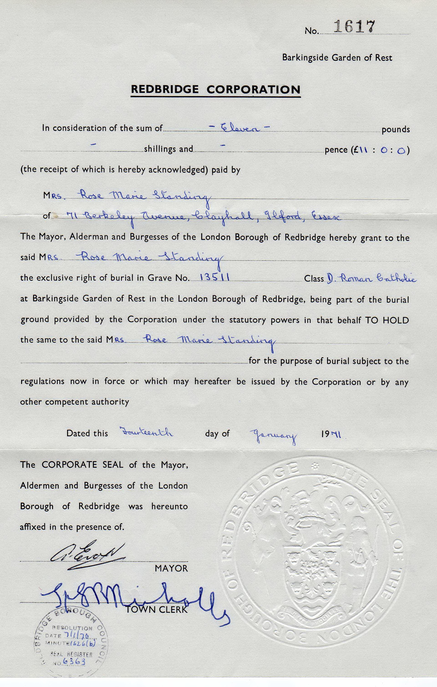
Bernard Standing - Grave Registration Details - 2
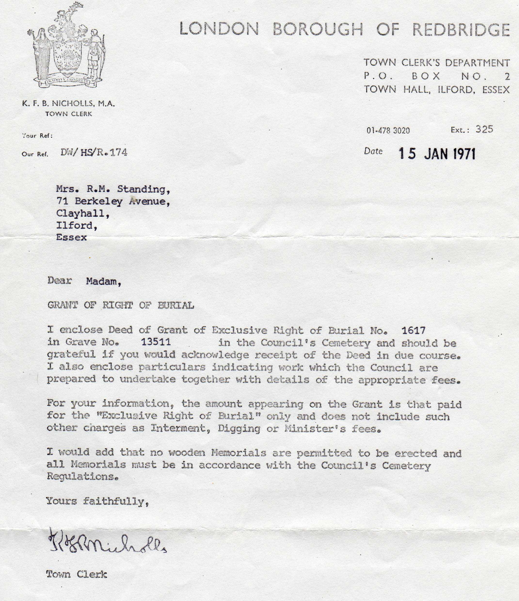
Bernard Standing with son Philip
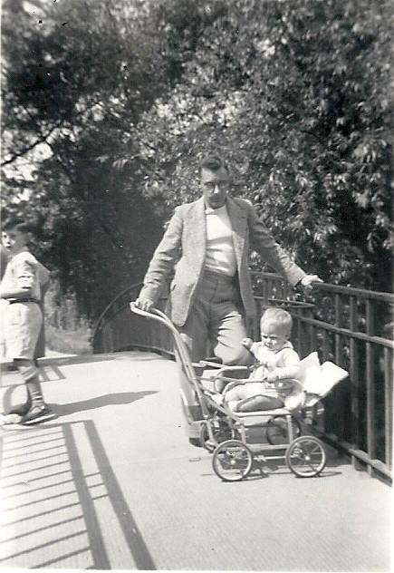
Marriage of Bernard Standing to Rose Jackson

Rose Jackson and Bernard Standing
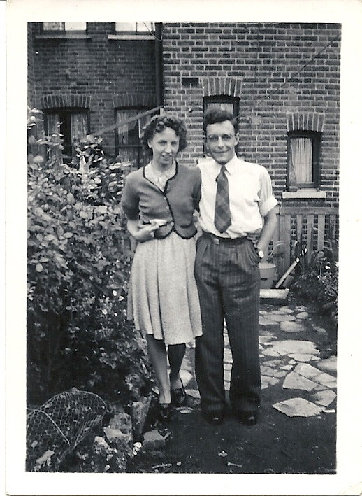
Christening of Philip Anthony Standing
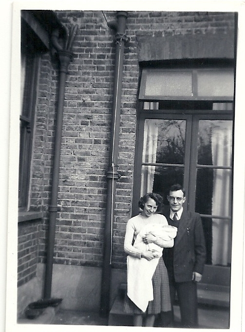
Bernard Standing - gravestone
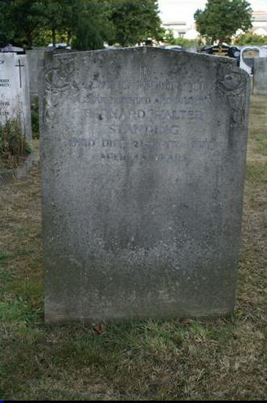
1964 Electoral Register
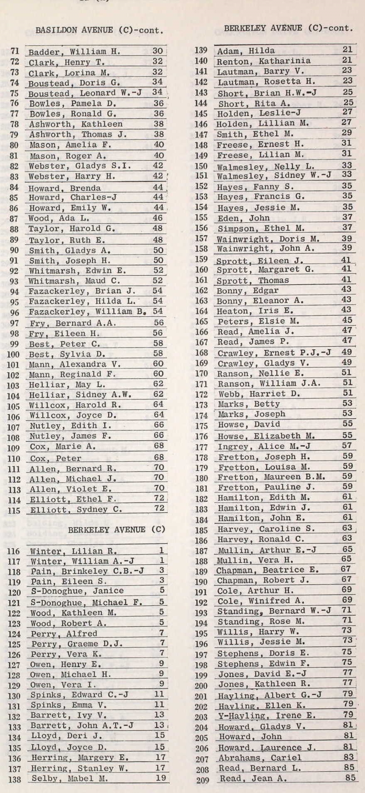
Bernard Walter Standing - birth certificate
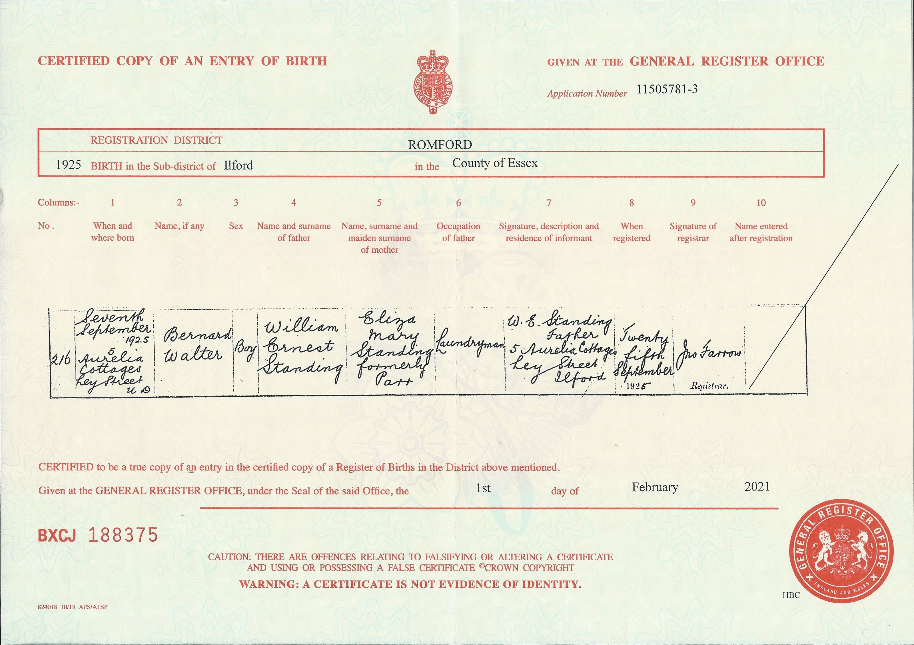
England & Wales deaths 1837-2007 Transcription - BMD-D-1970-4-AZ-001129-048
England & Wales marriages 1837-2008 Transcription - BMD-M-1949-2-AZ-001350-026
England & Wales births 1837-2006 Transcription - BMD-B-1925-3-AZ-001248-147
England & Wales Government Probate Death Index 1960-2019 - GBOR/GOVPROBATE/A/1969-1971/00646378
Family Tree
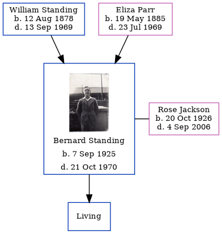Map
Generated by ged2site. Last updated on Jul 3, 2024
Known Issues
Burial place (Barkingside, London, England) has no citations
Residence record for 1949 contains no citation
Residence record for 1970 contains no citation
Listed in the residence for 1964, but spouse Rose Jackson is not
Listed in the residence for 1970, but spouse Rose Jackson is not
Adding date of burial as 'aft 21 Oct 1970'
1939 UK register information missing